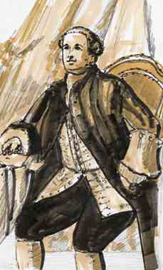
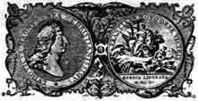

|

Pierre
Choret was born on February 24, 1690, in Beauport, and was baptized
in the church of Notre-Dame de la Miséricorde; his godparents were
Pierre Parent and Marie Chauveau.
Pierre
was the second of the eighteen children of Pierre le cadet and
Marie-Anne Beaugis. His older sister, Marie-Anne, having
died in the weeks after her birth in 1688,
Pierre became the eldest of the children of the third
generation of our Charette line. Both
of his Beaugis grandparents were living, Michel dying in
1717 and his wife, Madeleine Dubois, in 1721. On
his father's side, only his grandmother Choret was alive when
Pierre was born. Sébastienne Veillon died in
1698. Pierre Choret also had many uncles, aunts
and cousins. This large family lived nearby,
in Beauport or on Île d'Orléans. 
A
CRADLE UNDER CANNON FIRE The
first months of Pierre Choret's life were eventful,
to say the least. During the 1680s,
the French and English
were vying for control of the fur trade on the North American
continent. Both sides happily waged war through Native
nations acting as proxies. The British colonies armed the Iroquois,
strongly encouraging them to attack French settlements by any means.
The situation grew even worse when, early in 1689,
France and England officially declared war on each other in Europe. That
same year, on the night of August 4 to 5, the village of Lachine was
attacked and many of its inhabitants were killed or carried off. Over the
following months, other raids took place, notably at Lachenaie and on Île
Jésus.
In
New France, the authorities and the people knew very
well that it was the English of the neighbouring colony who
were the real threat, and that they were the ones
behind these deadly raids carried out
by the Iroquois. The settlers' morale was then at its
lowest. It was at this point that Governor Frontenac
decided to strike back. In January 1690 he sent three
parties to attack settlements on the borders of
New England. These raids were a complete success and
spread panic in the English colonies. For the
British authorities, this was too much. They wanted to
be done with New France once and for all, so they
planned an attack by land as far as
Montreal, and by sea as far as Quebec.
FRONTENAC
VERSUS PHIPS
 Frontenac
expected a counter-attack. He strengthened the forts and, in
Quebec, during the winter of 1690, had stakes cut to
build a palisade as soon as the thaw came. It ran from the
Saint-Charles River up to the height beside the
Château Saint-Louis, the governors' residence. On
this height he had a battery of eight
cannons installed. This spot, which in 1693 would become the Cap-Diamant
Redoubt, is today the Citadel. In
the Lower Town, he had twelve cannons installed. Frontenac
expected a counter-attack. He strengthened the forts and, in
Quebec, during the winter of 1690, had stakes cut to
build a palisade as soon as the thaw came. It ran from the
Saint-Charles River up to the height beside the
Château Saint-Louis, the governors' residence. On
this height he had a battery of eight
cannons installed. This spot, which in 1693 would become the Cap-Diamant
Redoubt, is today the Citadel. In
the Lower Town, he had twelve cannons installed.
Frontenac, told of
the planned attack on Montreal, went there with his
troops. The land army advancing on
New France was made up of 2,500 men: American and English militiamen or
volunteers, Dutchmen,
Loups (Mahicans), Sokokis and Iroquois. Commander John Winthrop, of
Connecticut, was to come down the Richelieu and seize Montreal. But
this expeditionary force never reached its goal, because at the entrance
to Lac Saint-Sacrement (Lake George), owing to disagreements among the leaders and
the smallpox raging among the troops, they all
scattered without going any farther.
On
the afternoon of September 10, Frontenac learned that a
fleet that had sailed from Boston had just passed the mouth of the
St. Lawrence. So he returned to Quebec with his troops,
asking the militiamen of
Montreal and Trois-Rivières to join them in
Quebec quickly. He had the townspeople dig trenches
to strengthen the town's defences. Those with houses or warehouses
on
the riverbank moved their goods to the Upper Town.
 |
On October 16, 1690,
William Phips, a 40-year-old native of Maine, took up a strong position before
the town of Quebec aboard his flagship, the Six Friends.
He commanded 34 ships, 5 of them armed
with 106 cannons, and 2,300 sailors and militiamen. This army was made up of Americans, not
Englishmen, because England, having suffered some naval
defeats at the hands of the French in Europe, sent
its orders to its colony but could not supply it with
soldiers.
Five months earlier, with only 7 ships and
450 men, Phips had demanded and obtained, without firing a shot, the surrender of
Port-Royal in Acadia.
From this event, and from the attack on Quebec, came
the birth of a purely American patriotic
feeling. New England settlers
united for the first time and, without help from the
mother country, took the defence of their lands into their own hands
and went to attack the enemy on its own territory.
|
Admiral
Phips, sure
of himself, sent Major Thomas Savage to Frontenac. As soon as the English
envoy landed on shore, he was blindfolded. They did not want
him to see how weak the town's defences were. What is more, in the hope of
making him believe that the road to the fort was impassable, two sergeants
led him along impossible paths. Then, to convince him that Quebec
was teeming with defenders who were, moreover, not the least bit impressed by
all those enemy ships on the waters of the St. Lawrence, a few townspeople
laughed, ran around the envoy and lined up as if a dense crowd
were blocking the way. Finally, to make sure the desired effect was achieved,
a dozen men, passing back and forth around him, crowded and
jostled him all along the way.
After all
these adventures, Major Savage finally came before
Frontenac. In Commander Phips's name, he ordered him
to surrender the town of Quebec immediately and without
conditions. The governor had one hour to think it over and
give his decision.

In full dress uniform and surrounded by his staff,
Louis de Buade,
Comte de Frontenac, a native of France, aged 69, answered Admiral Phips's envoy in a martial tone :
«I will not keep you waiting so long. No, I have no answer to give
your general other than from the mouths of my cannons and with musket fire; let him
learn that this is not the way to summon a man like me;
let him do the best he can on his side, as I will do on mine.»
With these words, Frontenac became a hero of
our history. Yet many historians are very
critical of his administration,
believing that this governor had only one aim, "to line
his pockets", and that his protection came from the
"lobbying" that he and his wife did so well
with Louis XIV. Some regard him as the
"worst of the brigands" the colony ever knew.
Another example showing that, when you scratch a little, the
lives of those whom time and legend call
heroes almost always have their dark sides...
SO THERE WOULD BE
A BATTLE
The
English officers then agreed on a plan of attack. The troops would land on the Beauport shore,
cross the Saint-Charles River and attack Quebec by
land. At the same time, the ships would bombard the
town. On October 18, 1,400 men landed on the Beauport
flats. You could almost say "in the Chorets'
backyard", since the ancestral
land of Mathieu Choret borders the bay of Beauport.
The enemy were immediately met by heavy fire
from militiamen lying in ambush, first those of Beauport, then
those from Île d'Orléans, Lauzon and Beaupré, and all
those who had arrived the day before from Trois-Rivières and Montreal.
Unable to hold their
beachhead on the Beauport flats, the English troops
fell back before the Canadien guerrilla fighters. In
the afternoon, the English fired some 500 cannon volleys,
which nevertheless did very little damage.
For two more days, the cannonade
and the assaults on the Beauport flats went on. But on October 21 the
English re-embarked, having failed to hold the beachhead that would
have let them advance on Quebec. The weather, too,
played its part: it was getting colder and colder, and Phips did not want to winter on the
St. Lawrence.
On October 23 and 24, negotiations took place. The English and French exchanged
prisoners, and then Admiral Phips's fleet headed back to Boston.
THE CHORETS
IN THE FRONT ROW
Let's go back to our little
Pierre Choret, born in 1690, the year of Admiral Phips's attack
on Quebec.
His family and those
around him were surely alarmed by the situation, since they were
"in the front row". Indeed, let's not forget
that Pierre's parents, his grandparents, two of his
Choret uncles (the twins Ignace and Pierre l'aîné), and
other relatives on his mother's side lived in Beauport. The other Choret and Beaugis relatives lived nearby, several of them on Île d'Orléans.
When the English were seen
approaching Île d'Orléans, the militia captains of
Beaupré, Beauport, Île d'Orléans and Lauzon
were ordered to keep their men each in his own district and
not to march on Quebec, since Frontenac did not know where
the English would land.
And it was precisely
at Beauport, on the flats, that 1,400 of Phips's militiamen
landed on October 18, 1690. So it fell to the Beauport militia
to face the enemy first. Nicolas
Juchereau, at the head of some sixty men,
stopped them from going any farther and drove them back to
La Canardière. This action took place very close to the home
of Pierre Parent (Pierre Choret's godfather?) and the other settlers along the shore.
The other militias came as reinforcements. The battles fought on October 18, 19 and 20
thus took place near baby Pierre Choret's home.
 Pierre Choret's father, his
uncles and cousins, and even his grandfather Beaugis, very
probably belonged to this Beauport militia. In
critical situations, every able-bodied man had to
take part in defending the territory. They were under the
orders of their militia captain, Nicolas Juchereau, sieur de
St-Denis. He was also their seigneur (lord of the manor). As
the husband of Robert Giffard's second daughter,
Marie-Thérèse, he had inherited the title of Seigneur of Beauport. Pierre Choret's father, his
uncles and cousins, and even his grandfather Beaugis, very
probably belonged to this Beauport militia. In
critical situations, every able-bodied man had to
take part in defending the territory. They were under the
orders of their militia captain, Nicolas Juchereau, sieur de
St-Denis. He was also their seigneur (lord of the manor). As
the husband of Robert Giffard's second daughter,
Marie-Thérèse, he had inherited the title of Seigneur of Beauport.
We have already seen,
on Mathieu's site
(the first generation), that Robert
Giffard and four Juchereau brothers came from the Perche with
their families to settle Beauport. Nicolas Juchereau
was the son of Jean, who signed as a witness to the
contract by which the Jesuits granted land to Mathieu
Choret. Nicolas and his
wife were therefore of the second generation. In 1690,
Nicolas, like Frontenac, was a man well into his
sixties.
 Nicolas
Juchereau, Seigneur of Beauport, was ennobled by Louis XIV in
1692 after the three battles he fought: first in
1661 with the Sieur de Courcelles against the Agniers (Mohawks), then in
1662 with the Sieur de Tracy against the Iroquois, and finally in
1690 at the siege of Quebec. His letters of nobility were registered with the Chambre des
Comptes in Paris on March 16, 1697, and in Quebec on April 5, 1707. Nicolas Juchereau de St-Denis was also a councillor on the Council of
New France and a member of the Compagnie des Cent Associés (Company of One Hundred Associates). Nicolas
Juchereau, Seigneur of Beauport, was ennobled by Louis XIV in
1692 after the three battles he fought: first in
1661 with the Sieur de Courcelles against the Agniers (Mohawks), then in
1662 with the Sieur de Tracy against the Iroquois, and finally in
1690 at the siege of Quebec. His letters of nobility were registered with the Chambre des
Comptes in Paris on March 16, 1697, and in Quebec on April 5, 1707. Nicolas Juchereau de St-Denis was also a councillor on the Council of
New France and a member of the Compagnie des Cent Associés (Company of One Hundred Associates).
In a report to the Minister of the Marine, Frontenac
stressed the role played by the
Canadien militia, saying he felt bound to
bring to his attention the zeal and bravery with which
all the militias, and above all those of Beauport and
Beaupré, had conducted themselves throughout the campaign.
The Governor kept his most flattering comments for
the Sieur Juchereau de St-Denis, captain of the Beauport militia,
who had fought from the very beginning and had been
wounded, having had "an arm broken by gunfire".
In another letter, Frontenac wrote that "the
defence of Quebec was the work of a brilliant
phalanx, including Ste-Hélène, Maricourt, Lotbinière, Juchereau de
St-Denis, Longueuil, Prévost, Ramezay, Callières with the
militiamen of Montreal, Hertel with those of Trois-Rivières,
Villiers, Cabanac, Duclos, D'Orvilliers, Latouche, Clermont and the
farmers of Beauport, of the Côte de Beaupré, of Île
d'Orléans, the garrison and the schoolboys of Quebec."
|

Today, a view of part of the
Beauport
flats.
On the left you can see the tip of Île d'Orléans and its
bridge. The flats are crossed by
the Dufferin-Montmorency highway. The land
belongs to the Port of Quebec, which uses part of it
and leaves the rest to windsurfers, for whom
it is paradise.
|
QUEBEC IS
SAVED
To mark the event, the Lower Town church was given the
name Notre-Dame-de-la-Victoire. Frontenac had a
Te Deum sung and ordered festivities.
In fact, the point was to
raise the people's morale, because the reality was that
everything was in short supply, since no ship had come from France. They
had to get ready for a long winter without having received
any supplies.
|

Place Royale in the 19th century
Built
in 1687-1688 on the site of Champlain's Habitation
and the King's Storehouse, which had burned down a few years
earlier, the church was dedicated in 1690 to
Notre-Dame-de-la-Victoire to commemorate the defeat
of Admiral William Phips before Quebec.
In 1711, after the wreck of a large part
of Admiral Hovenden Walker's fleet, it was named
Notre-Dame-des-Victoires.
At the top right you can see the Cap-Diamant Redoubt.
|
A
COMMEMORATIVE MEDAL
Frontenac's victory
was celebrated with great fanfare in New France, and in
France, where it was commemorated with a medal. The obverse of
the medal shows Louis XIV in profile and bears the inscription
Ludovicus magnus rex christianus (Louis, the great Christian
king).
The reverse shows an allegorical figure trampling
the English flag underfoot. To its left is a beaver,
while to its right another symbolic figure leaning on
an urn represents the St. Lawrence River.
Around the edge
you can read: Francia in novo orbe victrix (France victorious
in the New World) and at the bottom, Kebeca Liberata
MDCXC.

This same medal was struck
again in 1967 and presented to the people of Quebec by
General Charles de Gaulle, President of the French Republic,
during his memorable visit to the World's Fair (Expo 67) in
Montreal.
All this did not, however, put an end to the commercial rivalry, which remained,
on the contrary, very violent between the French and the English. Hudson Bay, a key
centre of the fur trade, would be the scene of some of the
great feats of arms of the famous Canadien soldier Pierre Le Moyne
d'Iberville. Among other exploits, it was there that, aboard the Pélican, alone against three English ships, he would
put the enemy to flight one day in September 1697.
The
war also went on in Europe. It was not until
1697 that it ended with the signing of the Treaty of
Ryswick. Under this treaty, the American possessions
of France and England were restored as they had
been before the war. All this fighting served no purpose
except to swap, for a time and until the
next conflict, the ownership of certain settlements
in America.
A
lasting peace with the Native nations would, however, come out of
all these hostilities. This was the Great Peace of
Montreal, which the French and several Native nations,
including the Iroquois, signed on August 4, 1701.

The town of Quebec in 1700
(click on the image and then enlarge it to see
the plan clearly)

|